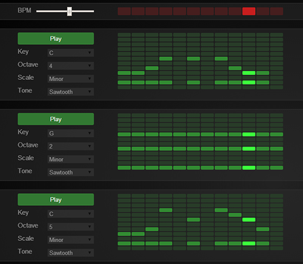

Multi-track Synthesizer
Prototype
http://people.rit.edu/bcw7044/p1/synth/ Abstract
The experience is a multi-track synthesizer. The user would be able to create and run multiple audio tracks, each with its own melody. This site, was used for a basic idea of how the sequencer matrix would work. Each matrix is a separate track which can be individually modified. The user will be able to add or delete tracks, as well as turn playback of a track on or off. The user will also be able to adjust the tempo and the number of beats per track. The tempo and number of beats is shared among all of the tracks. To turn a note on or off, the user will simply need to click on the note on the matrix to toggle that note.
On each track there are additional options to modify properties of that specific track. The user will be able to change the musical key and octave that the notes in that track are played in. Also, the user can change the scale to be a major, minor, chromatic, or blues scale. Additionally, the matrix can shifted to the left or right using the arrows on the left and right of each matrix. Finally, the tone of the notes can also be changed to sine, sawtooth, triangle, or square.